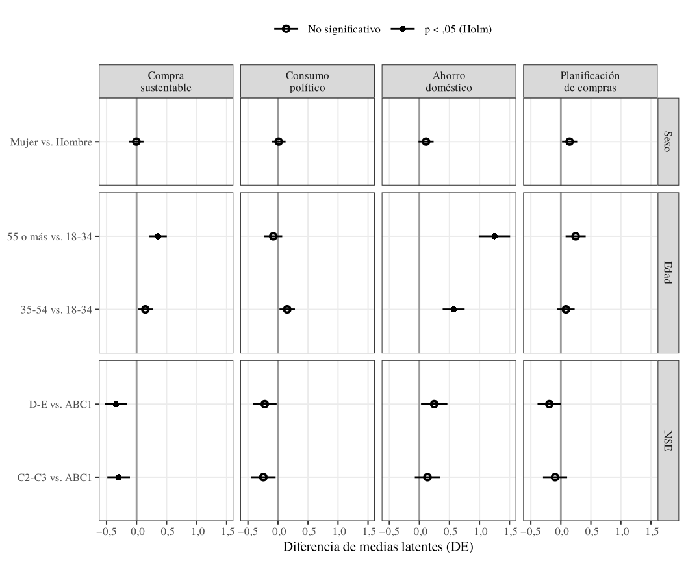

Título reducido: Socio-Environmental Consumption Scales
Número de palabras: 8.000 (sin incluir la lista de referencias)
Declaración responsable de autoría, originalidad y carácter inédito: las personas firmantes declaran que son autoras del trabajo, que este es original e inédito, que no ha sido publicado total ni parcialmente y que no se encuentra en evaluación en ninguna otra revista. Todas las personas autoras han aprobado la versión enviada.
Resumen
Antecedentes: La medición de las prácticas de consumo con implicancias ambientales y políticas en América Latina se ha basado en índices de “consumo consciente” o “responsable” que suponen un rasgo individual único y no ponen a prueba su estructura ni su equivalencia entre grupos. Este estudio ofrece un instrumento breve para medir prácticas de consumo socioambientales en Chile y aporta evidencia sobre su estructura interna, confiabilidad, invarianza y relación con otras variables. Método: Se analizaron 46 ítems de la Encuesta Sociedad de Consumo 2023 (N = 1.623). La muestra se dividió en dos mitades: en la primera se realizó un análisis factorial exploratorio con correlaciones policóricas, y en la segunda se estimaron análisis factoriales confirmatorios con estimador WLSMV, que también se usaron para elegir la forma final de las escalas. Se evaluó la invarianza por sexo, edad y nivel socioeconómico. Resultados: El modelo unidimensional ajustó de forma deficiente. Se obtuvieron dos escalas breves de dos factores correlacionados: consumo sustentable y político (nueve ítems; ajuste aceptable según los índices escalados e insuficiente según los robustos) y prácticas domésticas (ocho ítems; buen ajuste), con omegas entre ,71 y ,80. Un modelo exploratorio de ecuaciones estructurales con los cuatro factores ajustó bien, con cargas cruzadas pequeñas. Ambas escalas alcanzaron invarianza escalar por sexo y nivel socioeconómico, y escalar parcial por edad. Tras corregir por comparaciones múltiples, la compra sustentable fue menor en los niveles socioeconómicos medio y bajo, y el ahorro doméstico aumentó con la edad. Conclusiones: Las prácticas de consumo socioambientales forman cuatro dimensiones distintas que no conviene resumir en un puntaje único. La estructura es provisional: se seleccionó y se evaluó con los mismos datos, por lo que debe replicarse en una muestra independiente.
Palabras clave: prácticas de consumo, consumo político, consumo sustentable, invarianza de medida, Chile.
Abstract
Background: The measurement of consumption practices with environmental and political implications in Latin America has relied on “conscious” or “responsible” consumption indices that assume a single individual trait and do not test their structure or equivalence across groups. This study offers a brief instrument for measuring socio-environmental consumption practices in Chile and provides evidence of its internal structure, reliability, invariance, and relations with other variables. Method: We analysed 46 items from the 2023 Consumer Society Survey (N = 1,623). The sample was split into two halves: an exploratory factor analysis with polychoric correlations was conducted in the first, and confirmatory factor analyses with the WLSMV estimator, which were also used to choose the final form of the scales, in the second. Invariance across sex, age, and socioeconomic status was tested. Results: The unidimensional model showed poor fit. Two brief scales with two correlated factors each were obtained: sustainable and political consumption (nine items; acceptable fit according to scaled indices but insufficient according to robust indices) and household practices (eight items; good fit), with omega coefficients between .71 and .80. An exploratory structural equation model with the four factors fitted well, with small cross-loadings. Both scales reached scalar invariance across sex and socioeconomic status, and partial scalar invariance across age. After correcting for multiple comparisons, sustainable purchasing was lower at middle and low socioeconomic levels, and household saving increased with age. Conclusions: Socio-environmental consumption practices form four distinct dimensions that should not be summarised in a single score. The structure is provisional: it was selected and evaluated with the same data and must be replicated in an independent sample.
Keywords: consumption practices, political consumerism, sustainable consumption, measurement invariance, Chile.
En Chile, el consumo ocupa un lugar central en la vida social. Desde la década de 1990, la expansión del consumo y del crédito ha sido interpretada como un mecanismo de integración social que desplazó a la participación política (Moulian, 1997). Esa expansión fue liderada por las grandes tiendas y supermercados, que masificaron el crédito entre sectores excluidos de la banca, hasta normalizar el endeudamiento de los hogares como un pilar del modelo socioeconómico (Marambio-Tapia, 2022). En este contexto, la pregunta por cómo las personas incorporan consideraciones éticas, ambientales o políticas en sus decisiones de consumo no es marginal: se refiere a uno de los principales espacios en que se juega la relación entre ciudadanía y mercado.
La literatura ha abordado esa relación bajo nombres diversos, como consumo consciente, sustentable, responsable, ético o político, cuyos límites se superponen y generan confusión conceptual (Portilho, 2005). Estas denominaciones no son neutras. Las nociones de consumo consciente y responsable, difundidas en la región por organizaciones vinculadas al sector empresarial, han sido criticadas porque no cuestionan el proceso productivo y operan “uma perversa transferência de responsabilidades apenas para o ato de consumir do consumidor pessoa física” (Barros & Costa, 2008, p. 1). Ese desplazamiento libera al Estado y a las empresas de sus responsabilidades (Yoshizato Bierwagen, 2016) y es coherente con una sociedad de consumidores que “terceriza” en los individuos la responsabilidad por su propio bienestar (Bauman, 2007, p. 85). En Chile se ha advertido, por ejemplo, que los llamados a acortar la ducha para cuidar el agua omiten que la industria, y sobre todo la minería, concentra la mayor parte de su consumo (Marambio-Tapia, 2024). Por estas razones, en este estudio no se habla de consumo responsable, sino de prácticas de consumo socioambientales: prácticas cotidianas de compra, uso y organización del consumo que tienen implicancias ambientales o políticas, sin suponer que expresen una responsabilidad o una virtud individual. Estas prácticas van desde el ahorro doméstico de agua y energía hasta la participación en cooperativas o el boicot a empresas (Ariztía et al., 2010; Micheletti, 2003). La evidencia chilena reciente muestra tanto la expansión de estas prácticas, por ejemplo en iniciativas de consumo crítico surgidas durante la pandemia (Marambio-Tapia, 2025), como sus contradicciones: el compromiso ambiental declarado puede coexistir con pautas de consumo insostenibles, en lo que se ha descrito como un “auto-engaño verde” (Vanhulst & Marambio-Tapia, 2022).
Esta tensión entre lo declarado y lo practicado vuelve especialmente relevante contar con instrumentos que distingan con precisión qué se está midiendo. La medición predominante en América Latina se inspira en el Instituto Akatu, que define el consumo consciente como aquel que considera sus impactos sobre la propia persona, las relaciones sociales, la economía y el ambiente, y clasifica a los consumidores en una tipología ordenada a partir de la suma de prácticas declaradas (Instituto Akatu, 2007). La adaptación chilena de ese índice estimó que solo el 6,5% de la población podía clasificarse como “consumidora responsable”. Sin embargo, sus propios autores advirtieron que el índice “aglutina prácticas muy disímiles, lo cual tiende a esconder la distribución del consumo responsable en términos de nivel socioeconómico” (Ariztía et al., 2010, p. 107), y mediante un análisis factorial exploratorio identificaron prácticas distintas, como la compra consciente y el ahorro, con perfiles sociales opuestos.
Otros instrumentos aplicados en Chile y Brasil comparten limitaciones similares. Algunos estudios promedian los ítems en un puntaje único sin evaluar su dimensionalidad (Santos & Vasconcelos, 2022) o combinan indicadores heterogéneos en índices integrados (Silva et al., 2013). Los cuestionarios chilenos de consumo sustentable socialmente responsable se han validado mediante juicio de expertos, análisis de componentes principales con rotación ortogonal y coeficientes alfa, con valores entre ,51 y ,68 en sus dimensiones (Acuña Moraga & Severino González, 2018; Acuña-Moraga et al., 2020). Estas estrategias no permiten contrastar modelos alternativos, suponen dimensiones independientes entre sí y tratan como continuas respuestas que son ordinales.
A estas limitaciones técnicas se suma una de fondo. La literatura sobre consumo político muestra que prácticas usualmente agregadas responden a lógicas distintas: el boicot y el buycott se asocian con normas de ciudadanía diferentes (Copeland, 2014) y con rasgos de personalidad distintos (Ackermann & Gundelach, 2020), y el consumo político se distingue de las prácticas privadas por su intención pública (Micheletti, 2003). A la vez, prácticas consideradas sustentables, como el ahorro de agua y energía, pueden responder más a restricciones económicas que a motivaciones ambientales (Ariztía et al., 2010; Silva et al., 2013). Si estas prácticas responden a lógicas diferentes, un índice único mezcla motivaciones heterogéneas y puede ocultar diferencias sustantivas entre grupos. Peor aún, leer el ahorro forzado por la escasez como expresión de responsabilidad individual atribuye virtud, o culpa, a lo que en parte es una condición material.
Por estas razones, proponer modelos de medida, y no solo índices, tiene tres ventajas. Primero, permite poner a prueba la dimensionalidad en lugar de suponerla, comparando modelos alternativos con datos independientes. Segundo, permite estimar la confiabilidad de cada dimensión con indicadores adecuados para ítems ordinales. Tercero, permite evaluar la invarianza de medida, condición necesaria para que las comparaciones entre grupos sociales, que constituyen buena parte de los hallazgos de esta literatura, sean interpretables (Chen, 2007; Muñiz & Fonseca-Pedrero, 2019).
El objetivo de este estudio es proporcionar un instrumento para medir dimensiones de las prácticas de consumo socioambientales en población chilena y ofrecer evidencia preliminar de su validez basada en la estructura interna, su confiabilidad, su invarianza según sexo, edad y nivel socioeconómico, y su relación con otras variables. A partir de la literatura revisada se esperaba que: (a) un modelo unidimensional, implícito en los índices sumativos, ajustara peor que modelos multidimensionales; (b) las prácticas domésticas de ahorro se separaran de la compra sustentable y del consumo político (Ariztía et al., 2010); y (c) el consumo político se distinguiera de la compra sustentable (Micheletti, 2003). Además, se examinó si las dimensiones resultantes podían representarse en un mismo modelo de medida. La compra sustentable se esperaba en la esfera pública: como el consumo político, supone elegir productos por sus consecuencias más allá del hogar, lo que la literatura denomina buycott o consumo político positivo (Copeland, 2014; Micheletti, 2003), mientras que el ahorro y la planificación se orientan a la economía del hogar. Como estos ítems no se habían analizado juntos antes y no contaban con evidencia psicométrica previa, la estructura se exploró primero y luego se puso a prueba en una muestra independiente (Bandalos & Finney, 2010).
Método
Participantes
Participaron 1.623 personas mayores de 18 años, residentes en las 16 regiones de Chile (el 40,5% en la Región Metropolitana), que respondieron la Encuesta Sociedad de Consumo 2023 (Marambio-Tapia & Soto Márquez, 2023). El 51,7% eran mujeres. Por tramo de edad, el 41,0% tenía entre 18 y 34 años, el 33,8% entre 35 y 54, y el 25,2% 55 o más. Según el nivel socioeconómico (NSE), el 13,1% pertenecía al grupo alto (ABC1), el 36,8% al medio (C2-C3) y el 50,0% al bajo (D-E). El NSE corresponde a la clasificación de grupos socioeconómicos registrada en el perfil de cada panelista en Netquest, con las siete categorías de la Asociación de Investigadores de Mercado y Opinión Pública (AB, C1a, C1b, C2, C3, D y E), que se usó también para las cuotas. Aquí se agrupó en tres niveles para asegurar casos suficientes por grupo: ABC1 (AB, C1a y C1b), C2-C3 y D-E. La información disponible no indica con qué variables se construyó esa clasificación. La encuesta fue realizada por Netquest, empresa certificada según la norma ISO 20252:2019, con su panel en línea, que en Chile reúne a cerca de 300.000 personas registradas para responder encuestas. Netquest invitó a integrantes del panel mediante correos personalizados y aplicó cuotas por sexo, edad (seis tramos), NSE (siete grupos) y zona (Región Metropolitana y resto del país), definidas por el equipo de investigación para una meta de 1.600 casos. De 6.775 panelistas invitados, 2.135 iniciaron la encuesta, lo que da una tasa de participación de 31,5% (calculada por la empresa como la proporción de invitados que iniciaron su participación), y 1.626 la completaron y superaron los controles de calidad de la empresa. Esos controles excluyeron 76 casos: 28 por incongruencias entre sus respuestas y su perfil en el panel, 28 por fallar preguntas de atención, 14 por no superar un captcha, 4 por participación duplicada y 2 por edad o NSE fuera de los rangos requeridos. La base analizada contiene 1.623 casos [Completar: motivo de la diferencia con los 1.626 casos informados por Netquest]. Se trata de una muestra no probabilística por cuotas de personas que responden habitualmente encuestas en línea: su composición por sexo, edad, NSE y zona se ajusta a las cuotas, pero los resultados no pueden generalizarse a la población chilena.
Cada mitad de la muestra tuvo alrededor de 810 casos. Con comunalidades bajo ,50 y tres a cinco ítems por factor, se recomiendan entre 300 y 500 casos para estimar con precisión las cargas factoriales (MacCallum et al., 1999), por lo que el tamaño de cada mitad fue suficiente.
Instrumentos
Se analizaron las 46 preguntas de cuatro baterías de la encuesta, diseñadas para el estudio y sin evidencia psicométrica previa. La batería O1 (10 ítems) indaga prácticas de consumo, como comprar en plataformas extranjeras o elaborar un presupuesto mensual. La O2 (14 ítems) aborda prácticas cotidianas de ahorro y compra, como evitar dejar luces prendidas o comprar productos orgánicos. La O3 (10 ítems) indaga prácticas de consumo crítico y político, como usar redes sociales para promover empresas éticas o participar en cooperativas. Estas tres baterías se responden con la pregunta “¿Qué tan seguido usted…?” en una escala de cinco puntos (1 = Nunca; 5 = Siempre). La batería O4 (12 ítems) evalúa actitudes hacia el reciclaje en una escala de acuerdo de cinco puntos, que se recodificó para que un valor alto indicara mayor acuerdo. Se incluyó para evaluar si las actitudes forman dimensiones propias o se confunden con las prácticas. Los ítems retenidos se presentan en los Resultados.
Para la evidencia de validez con otras variables se usaron tres preguntas de la misma encuesta: el acuerdo con la afirmación “La forma en que uno consume algunos bienes tiene que ver con la postura política de uno” (1 = Muy en desacuerdo; 5 = Muy de acuerdo), la posición política (1 = Izquierda; 10 = Derecha) y el nivel educacional (10 categorías, de Sin estudios formales a Postgrado).
Procedimiento
La encuesta fue autoadministrada en línea entre el 18 y el 25 de julio de 2023. El 80,2% de las personas respondió desde un teléfono móvil, y la mediana de duración fue de 19,8 minutos. El orden de los ítems se rotó aleatoriamente dentro de cada batería. El proyecto contó con la aprobación del Comité de Ética de la Universidad Católica del Maule. Al inscribirse en el panel, cada participante accede a la información legal de Netquest y firma un consentimiento informado incluido en su perfil de usuario, que se rige por las condiciones de uso del panel. Este estudio es un análisis secundario de datos anonimizados, levantados en el marco de los proyectos Fondecyt N.º 11200893 y N.º 1212677, con objetivos más amplios que los de este artículo. La base no cuenta con ponderadores.
Análisis de datos
No hubo valores perdidos en los ítems analizados. La asimetría de los ítems varió entre −0,92 y 1,40 y la curtosis entre −1,62 y 0,37 (Tabla S1 del material suplementario). Como los ítems son ordinales, no se buscaron casos atípicos multivariados. Además de los controles de calidad de Netquest, para evaluar la calidad de las respuestas se identificaron los casos que respondieron en menos de un tercio de la mediana de duración y los que dieron la misma respuesta a todos los ítems de dos o más baterías (respuesta en línea recta); los modelos finales se reestimaron sin esos casos. Para reducir el efecto suelo y techo, las categorías extremas con menos del 10% de las respuestas se fusionaron de forma iterativa con la categoría adyacente, de modo que los ítems quedaron con entre tres y cinco categorías. Como el colapso se definió con la muestra completa antes de dividirla, los modelos finales se reestimaron también con las cinco categorías originales. Con menos de cinco categorías, las correlaciones de Pearson sesgan los resultados; por eso todos los análisis usaron correlaciones policóricas o estimadores para datos ordinales (Bandalos & Finney, 2010). La pertinencia del análisis factorial se evaluó con la prueba de esfericidad de Bartlett (1950) y el índice de Kaiser-Meyer-Olkin [KMO; H. F. Kaiser (1974)].
La muestra se dividió aleatoriamente en dos mitades (n1 = 811; n2 = 812). En la primera se realizó un análisis factorial exploratorio (AFE) con extracción por residuos mínimos, que no requiere normalidad multivariada y es estable con matrices policóricas, y rotación oblicua (oblimin), porque se esperaban factores correlacionados. El número de factores se evaluó con el análisis paralelo (Horn, 1965) y la prueba MAP (Velicer, 1976), y se compararon las soluciones de tres a ocho factores según su ajuste, el número de ítems con cargas salientes y la presencia de factores definidos por menos de tres ítems. Se consideró saliente una carga de ,40, que equivale a un 16% de varianza compartida. Los ítems se depuraron de forma iterativa, eliminando en cada paso el de menor carga entre los que no alcanzaban ese valor o presentaban cargas cruzadas (≥ ,30 en dos factores), y reestimando el modelo tras cada eliminación. Para obtener escalas breves, el procedimiento se repitió en la misma mitad con una carga mínima de ,50 (25% de varianza compartida) en las soluciones de tres a cinco factores, y se retuvieron los núcleos de al menos tres ítems que se repetían en ellas (Tabla S10 y Figura S1).
En la segunda mitad se estimaron análisis factoriales confirmatorios (AFC) con el estimador WLSMV, recomendado para indicadores ordinales con menos de cinco categorías (Bandalos & Finney, 2010). Se consideró buen ajuste un CFI y un TLI ≥ ,95, un RMSEA ≤ ,06 y un SRMR ≤ ,08 (Hu & Bentler, 1999), y ajuste aceptable un RMSEA ≤ ,08 (MacCallum et al., 1996). Como estos puntos de corte se derivaron con datos continuos y tienden a ser optimistas con WLSMV e indicadores ordinales (Xia & Yang, 2019), se usaron como orientación y se complementaron con el desajuste local. El RMSEA se informa con su intervalo de confianza del 90%, y el desajuste local se examinó con las correlaciones residuales mayores que |,10|. Para las escalas finales se informan además las versiones robustas del CFI, el TLI y el RMSEA, que corrigen el sesgo de los índices escalados con datos ordinales (Savalei, 2021). Los modelos anidados se compararon con la prueba de diferencia de χ² escalada (Satorra, 2000). Para examinar si las cuatro dimensiones podían representarse en un mismo modelo, se estimó un modelo conjunto con los cuatro factores correlacionados y se comparó su desajuste local entre ítems de distintas escalas y de una misma escala. Como ese modelo y los de cada escala no están anidados ni tienen los mismos indicadores, sus índices de ajuste no se compararon entre sí. En un análisis posterior se estimaron también un modelo exploratorio de ecuaciones estructurales (ESEM) con rotación objetivo, que admite cargas cruzadas pequeñas (Asparouhov & Muthén, 2009), y un bifactor-ESEM. La estabilidad de los modelos finales se evaluó reestimándolos en la mitad exploratoria y en la muestra completa. La confiabilidad se estimó con el coeficiente omega calculado a partir de las cargas estandarizadas del modelo WLSMV, que corresponde a la confiabilidad de las variables de respuesta latente y no del puntaje observado (McDonald, 1999), y con la varianza media extraída [AVE; Fornell & Larcker (1981)]. La validez discriminante se evaluó con el criterio de Fornell y Larcker, con el intervalo de confianza de la correlación entre factores y con la razón heterorrasgo-monorrasgo [HTMT; Henseler et al. (2015)], con ,85 como umbral. Se calculó además la determinación de los puntajes factoriales (Grice, 2001) y su correlación con el promedio simple de los ítems.
La invarianza de medida por sexo, edad (18-34, 35-54 y 55 o más) y NSE (ABC1, C2-C3 y D-E) se evaluó siguiendo la secuencia para indicadores ordinales de Wu & Estabrook (2016): configural, umbrales, métrica y escalar. La escala de los factores se identificó fijando su media en 0 y su varianza en 1 en el grupo de referencia, sin ítem marcador, y se verificó que todas las categorías de respuesta se observaran en cada grupo. Cada nivel se aceptó si, respecto del anterior, el CFI no disminuía más de ,010 y el RMSEA no aumentaba más de ,015 (Chen, 2007). La diferencia de χ² escalada se informa, pero no se usó para decidir, porque con muestras de este tamaño detecta diferencias triviales. Como el desempeño de esos puntos de corte con datos ordinales no está establecido y la Δχ² podría ser preferible con estimadores robustos (Sass et al., 2014), cuando ambos criterios discreparon se examinó cada ítem: se liberó uno a uno su intercepto, se registraron el índice de modificación, el cambio en el ajuste y en las medias latentes, y se calculó el tamaño de efecto dMACS (Nye & Drasgow, 2011), adaptado a ítems ordinales como la diferencia en la puntuación esperada del ítem entre grupos a igual nivel del factor. Cuando la invarianza escalar no se sostuvo, se liberaron uno a uno los interceptos con mayores índices de modificación (Byrne et al., 1989); esta modificación es post hoc y debe replicarse. Como las diferencias de medias con invarianza parcial dependen de qué ítems actúan como anclas, las comparaciones por edad se repitieron usando como únicas anclas cada par de ítems de cada factor. Alcanzada la invarianza escalar, se compararon las medias latentes, expresadas en desviaciones estándar del grupo de referencia, y los valores p de las 20 comparaciones se corrigieron con el procedimiento de Holm (1979).
La validez con otras variables se evaluó con las correlaciones entre los factores y variables externas, estimadas en la muestra completa en modelos que incluían cada escala. Las variables externas se trataron como indicadores únicos continuos sin error de medida, salvo las binarias, que se trataron como ordinales. Se esperaba que el consumo político se correlacionara positivamente con considerar que el consumo expresa una postura política y negativamente con una posición política de derecha, dada la asociación del consumo político con orientaciones progresistas (Micheletti, 2003). Para el ahorro doméstico, la literatura sugiere que responde más a condiciones materiales que a una orientación ideológica (Ariztía et al., 2010; Silva et al., 2013). Si es así, debería relacionarse negativamente con la lectura política del consumo y con el ingreso, y positivamente con indicadores de presión financiera. Esta última implicancia se puso a prueba en un análisis posterior, con el ingreso mensual del hogar (cinco tramos; el 10,7% prefirió no responder), haber contraído deudas para comprar alimentos (como primer o segundo motivo de endeudamiento) y declararse más endeudado que tres años antes. La base no registra respuestas “no sabe” en la posición política, y el 42,5% eligió el valor 5; como ese valor puede reunir a quienes no se ubican en la escala, el análisis se repitió excluyéndolo.
No se registró un plan de análisis antes de examinar los datos. Para distinguir la evidencia confirmatoria de las decisiones tomadas tras inspeccionar resultados, la Tabla S16 registra cada decisión, la mitad de la muestra en que se tomó y si se especificó antes o después de ver los resultados de la mitad de prueba. Solo la comparación del modelo unidimensional con la estructura exploratoria y con su separación teórica en compra sustentable y consumo político se especificó antes de estimar los modelos en la mitad de prueba. La selección de las escalas breves, su organización en dos factores, el modelo conjunto, el ESEM, los interceptos liberados por edad y los análisis de sensibilidad se definieron después y deben leerse como exploratorios.
Los análisis se realizaron en R 4.3.3 con los paquetes psych 2.4.1 (Revelle, 2024), lavaan 0.6.17 (Rosseel, 2012) y semTools 0.5.6 (Jorgensen et al., 2022).
Resultados
Estructura factorial exploratoria
En la mitad exploratoria, la prueba de Bartlett fue significativa, χ²(1035) = 12.690,51, p < ,001, y el KMO global fue ,85 (MSA mínimo = ,50, en un ítem de actitudes hacia el reciclaje). Como la prueba de Bartlett supone normalidad multivariada y aquí se aplicó a correlaciones policóricas, se interpreta solo como orientación. Los criterios sobre el número de factores no convergieron: el análisis paralelo sugirió 11 factores y la prueba MAP, 3. Ninguna solución inicial tuvo una estructura simple (Tabla S2). Las de tres a cinco factores fusionaban el ahorro doméstico con la planificación de compras, y desde cinco factores aparecían factores definidos por solo dos ítems, como las compras en línea o la reparación de objetos y la compra de ropa de segunda mano, o factores sin ítems con cargas salientes, que son débiles y poco replicables (Bandalos & Finney, 2010). Se retuvo la solución de cinco factores como punto intermedio entre ambos criterios y como punto de partida de la depuración, aunque su ajuste fue bajo (TLI = ,71).
La depuración eliminó 19 ítems (Tabla S3) y dejó 27 en cinco factores: compra sustentable y consumo político, ahorro doméstico, planificación de compras, facilidad para reciclar y valoración del reciclaje. Al eliminar los ítems sin cargas salientes o con cargas cruzadas, el ahorro doméstico y la planificación quedaron en factores separados. La solución final explicó el 41,9% de la varianza de los ítems. Los coeficientes de patrón y de estructura, las comunalidades y las correlaciones entre factores se presentan en las Tablas S4 a S6. Las correlaciones entre factores fueron bajas a moderadas; la mayor fue entre ahorro doméstico y planificación de compras (r = ,51). Con los ítems depurados, el análisis paralelo sugirió seis factores. El sexto factor plausible, que separa la compra sustentable del consumo político, se puso a prueba en el AFC.
Estructura factorial en la mitad de prueba
Los resultados de esta sección provienen de la mitad de prueba, pero solo el primer párrafo corresponde a comparaciones especificadas de antemano; los siguientes describen decisiones tomadas tras inspeccionar esos resultados (Tabla S16).
En la mitad de prueba, el modelo unidimensional ajustó de forma deficiente (Tabla 1). Separar el primer factor exploratorio en compra sustentable y consumo político mejoró el ajuste. Eliminar después, de forma post hoc, el ítem “En mi hogar, todos/as reciclamos”, que describe una práctica más que una actitud, lo mejoró algo más, pero ese modelo de 26 ítems no alcanzó un CFI de ,95, y los factores de actitudes hacia el reciclaje mostraron confiabilidad insuficiente. Con el criterio exigente, tres núcleos de ítems se repitieron en las soluciones exploratorias de tres a cinco factores (Tabla S10): consumo crítico y político (siete ítems de la batería O3), ahorro doméstico y planificación de compras; los factores de reciclaje retuvieron solo dos ítems cada uno. El modelo “Consumo crítico, un factor” de la Tabla 1 corresponde al primero de esos núcleos. A la compra sustentable se agregaron dos ítems de compra de productos orgánicos y reciclados, que en la solución inicial de cinco factores cargaban con los de compra sustentable pero no superaron el criterio exigente. En total se estimaron 10 modelos en la mitad de prueba (Tabla 1), por lo que esta fase fue en parte exploratoria.
Dos modelos breves resultaron adecuados (Tabla 1). El primero, consumo sustentable y político, distingue un factor de compra sustentable y uno de consumo político. Su ajuste fue bueno según CFI, TLI y SRMR, y aceptable según el RMSEA (RMSEA = ,063, IC 90% [,052, ,076]). Tratar sus nueve ítems como un único factor empeoró el ajuste de forma significativa, Δχ²(1) = 98,84, p < ,001. El segundo, prácticas domésticas, distingue el ahorro doméstico de la planificación de compras, con buen ajuste en todos los índices (RMSEA = ,025, IC 90% [,000, ,043]). Las versiones robustas de los índices confirmaron el buen ajuste de la escala de prácticas domésticas (CFI = ,992; RMSEA = ,028), pero no el de la escala de consumo sustentable y político, cuyo ajuste resultó insuficiente con esos índices (CFI = ,934; RMSEA = ,086, IC 90% [,068, ,105]; valores similares en la muestra completa). En ambos, ninguna estimación fue impropia y todos los modelos convergieron. Hubo 4 correlaciones residuales mayores que |,10| en la primera escala, con un máximo de ,14, y ninguna en la segunda. Ambos modelos mantuvieron su ajuste en la mitad exploratoria (CFI = ,974 y ,982) y en la muestra completa (CFI = ,971 y ,988; RMSEA = ,061, IC 90% [,053, ,070] y RMSEA = ,037, IC 90% [,027, ,048]).
El modelo conjunto con los cuatro factores no alcanzó un buen ajuste (CFI = ,925; RMSEA = ,060, IC 90% [,054, ,066]; Tabla 1), y su desajuste se localizó entre las escalas: superaron |,10| el 19% de las correlaciones residuales entre ítems de distintas escalas (14 de 72), frente al 9% de las correlaciones dentro de una misma escala (6 de 64). Casi todos esos residuos involucraron al consumo político y las prácticas domésticas. El ESEM, en cambio, ajustó bien (CFI = ,992; RMSEA = ,024, IC 90% [,014, ,033]; Tabla 1), con 1 residuo entre escalas mayor que |,10|. Todas sus cargas principales superaron ,47 y ninguna carga cruzada alcanzó ,30; las mayores fueron las del ítem O3.4 en consumo político (,27), del O2.11 en consumo político (−,23) y del O3.3 en compra sustentable (,22) (Tabla S13). En el ESEM, el consumo político siguió prácticamente sin relación con el ahorro (r = −,14), y la compra sustentable se correlacionó con el consumo político (r = ,54), la planificación (r = ,45) y el ahorro (r = ,39). El bifactor-ESEM produjo una solución impropia, con una carga estandarizada mayor que 1, y se descartó. Por lo tanto, el desajuste del modelo conjunto se debe a cargas cruzadas pequeñas y no a que las dimensiones requieran instrumentos separados: las cuatro pueden estimarse en un mismo modelo si se admiten esas cargas. Las dos escalas se presentan por separado por razones prácticas, porque cada una puede usarse de forma independiente con un modelo confirmatorio simple. La compra sustentable se agrupó con el consumo político porque formó un solo factor con él en el análisis exploratorio y es el factor con el que más se correlaciona.
Tabla 1
Índices de Ajuste de los Modelos Confirmatorios en la Mitad de Prueba (n = 812)
| Modelo | Ítems | χ² | gl | p | CFI | TLI | RMSEA [IC 90%] | SRMR |
|---|---|---|---|---|---|---|---|---|
| Inicial: Unidimensional | 27 | 3.991,20 | 324 | < ,001 | ,439 | ,392 | ,118 [,115, ,121] | ,134 |
| Inicial: Cinco factores (AFE) | 27 | 1.560,88 | 314 | < ,001 | ,809 | ,787 | ,070 [,067, ,073] | ,088 |
| Inicial: Seis factores | 27 | 1.067,66 | 309 | < ,001 | ,884 | ,868 | ,055 [,051, ,059] | ,069 |
| Inicial: Seis factores, sin O4.6 | 26 | 843,65 | 284 | < ,001 | ,910 | ,897 | ,049 [,045, ,053] | ,064 |
| Breve: Consumo crítico, un factor | 7 | 122,60 | 14 | < ,001 | ,943 | ,915 | ,098 [,082, ,114] | ,064 |
| Breve: Consumo sustentable y político, un factor | 9 | 325,38 | 27 | < ,001 | ,886 | ,848 | ,117 [,106, ,128] | ,090 |
| Breve: Consumo sustentable y político, dos factores | 9 | 110,90 | 26 | < ,001 | ,968 | ,955 | ,063 [,052, ,076] | ,049 |
| Breve: Ahorro doméstico, un factor | 5 | 4,62 | 5 | ,465 | 1,000 | 1,001 | ,000 [,000, ,047] | ,015 |
| Breve: Prácticas domésticas, dos factores | 8 | 28,70 | 19 | ,071 | ,995 | ,992 | ,025 [,000, ,043] | ,027 |
| Conjunto: ambas escalas, cuatro factores | 17 | 442,48 | 113 | < ,001 | ,925 | ,910 | ,060 [,054, ,066] | ,066 |
| ESEM: ambas escalas, cuatro factores | 17 | 109,22 | 74 | ,005 | ,992 | ,985 | ,024 [,014, ,033] | ,024 |
Nota. Índices escalados (WLSMV). Inicial: modelos con los ítems retenidos en la depuración con carga ≥ ,40; el modelo “seis factores, sin O4.6” elimina post hoc un ítem. Breve: modelos con los ítems retenidos con carga ≥ ,50 y al menos tres ítems por factor; “Consumo crítico, un factor” contiene los siete ítems de la batería O3 que formaron un núcleo estable en el análisis exploratorio. Conjunto: los cuatro factores de ambas escalas en un mismo modelo, que no está anidado en los modelos de cada escala. ESEM: modelo exploratorio de ecuaciones estructurales con los mismos 17 ítems y rotación objetivo (estimado después de los demás). Los modelos finales propuestos son los de dos factores.
Parámetros, confiabilidad y calidad de los factores
En la muestra completa, todas las cargas estandarizadas fueron significativas (p < ,001) y superaron ,48 (Tabla 2; cargas no estandarizadas y errores estándar en la Tabla S7). Las correlaciones entre los factores de cada escala fueron altas pero lejanas a 1 (compra sustentable y consumo político, r = ,71, IC 95% [,67, ,76]; ahorro y planificación, r = ,59, IC 95% [,54, ,64]). Todos los factores alcanzaron un omega de al menos ,70. Sin embargo, la AVE de los cuatro factores quedó bajo ,50 (entre ,40 y ,47), y 12 de los 17 ítems tuvieron menos de la mitad de su varianza explicada por su factor (R² < ,50). Es decir, las escalas son confiables como conjunto, pero cada ítem por separado contiene una proporción importante de varianza específica o de error. La planificación de compras fue el factor más frágil, con tres ítems y uno de ellos con carga de ,48. La correlación entre compra sustentable y consumo político implica una varianza compartida de ,51, mayor que la AVE de ambos factores, por lo que no se cumple el criterio de Fornell y Larcker. Sin embargo, el límite superior de su intervalo de confianza (,76) y la HTMT (,68) quedaron bajo ,85: los factores son distinguibles, aunque están estrechamente relacionados. Además, el AFC sobreestima esa correlación, porque al fijar en cero las cargas cruzadas traslada la varianza que los ítems comparten con el otro factor a la correlación entre factores (Asparouhov & Muthén, 2009). En la mitad de prueba, la correlación entre compra sustentable y consumo político bajó de ,66 en el AFC conjunto a ,54 en el ESEM, lo que equivale a una varianza compartida de ,30, inferior a la AVE de ambos factores; las demás correlaciones disminuyeron o se mantuvieron. La determinación de los puntajes factoriales fue de al menos ,89, y el promedio simple de los ítems de cada factor se correlacionó entre ,89 y ,97 con el puntaje factorial.
Tabla 2
Ítems, Cargas Factoriales Estandarizadas y Confiabilidad de las Escalas (N = 1.623)
| Ítem | Enunciado | λ | R² |
|---|---|---|---|
| Compra sustentable (ω = ,77; AVE = ,46) | |||
| O2.11 | Compra productos orgánicos o naturales. | ,65 | ,42 |
| O2.12 | Compra productos hechos con material reciclado. | ,62 | ,38 |
| O3.4 | Compra un producto exclusivamente porque no daña el medioambiente en desmedro de otro, aunque sea más caro. | ,75 | ,56 |
| O3.7 | Se informa respecto de dónde viene la ropa, alimentos y otros productos que consume | ,67 | ,45 |
| Consumo político (ω = ,80; AVE = ,45) | |||
| O3.2 | Intenta influir en lo que consumen otras personas | ,65 | ,42 |
| O3.3 | Uso mis redes sociales para promover productos o empresas que considero éticas o sostenibles | ,77 | ,59 |
| O3.5 | Realiza un reclamo o demanda colectiva en el Sernac | ,59 | ,35 |
| O3.8 | Participa en asociaciones de consumidores, cooperativas o grupos organizados de compradores | ,74 | ,55 |
| O3.9 | Participa en marchas o movilizaciones | ,61 | ,37 |
| Ahorro doméstico (ω = ,77; AVE = ,40) | |||
| O2.1 | Evita dejar luces prendidas en ambiente desocupados | ,73 | ,53 |
| O2.2 | Corta el agua mientras se lava los dientes. | ,63 | ,39 |
| O2.3 | Toma duchas cortas | ,60 | ,36 |
| O2.4 | Espera que los alimentos se enfríen antes de guardarlos en el refrigerador. | ,59 | ,35 |
| O2.5 | Desenchufa aparatos eléctricos cuando no los está ocupando. | ,62 | ,38 |
| Planificación de compras (ω = ,71; AVE = ,47) | |||
| O1.10 | Elabora un presupuesto mensual para monitorear mis gastos | ,60 | ,36 |
| O2.8 | Planifica compra de alimentos. | ,90 | ,81 |
| O2.9 | Planifica compras de vestuario. | ,48 | ,23 |
Nota. Escala Consumo sustentable y político: factores Compra sustentable y Consumo político. Escala Prácticas domésticas: factores Ahorro doméstico y Planificación de compras. Todos los ítems se responden con la pregunta “¿Qué tan seguido usted…?” (1 = Nunca; 2 = Rara vez; 3 = A veces; 4 = La mayoría de las veces; 5 = Siempre). λ = carga factorial estandarizada; R² = proporción de varianza del ítem explicada por el factor; ω = omega; AVE = varianza media extraída.
Invarianza de medida y diferencias entre grupos
La invarianza configural, de umbrales y métrica se sostuvo en ambas escalas para las tres variables (Tabla 3; índices completos y diferencias de χ² en la Tabla S8, y estadísticos por grupo en la Tabla S9). Todas las categorías de respuesta se observaron en cada grupo (la celda menor tuvo 12 casos). La invarianza escalar se sostuvo por sexo y NSE según el criterio de los índices de ajuste, aunque la diferencia de χ² fue significativa y algunos ΔCFI quedaron cerca del límite. El análisis por ítem mostró efectos pequeños (Tabla S11): liberar cualquier intercepto cambió el CFI en ,005 o menos, y el dMACS fue como máximo de ,30 por NSE y de ,20 por sexo. Los ítems con mayores índices de modificación por NSE fueron O2.4 y O2.5, en prácticas domésticas, y O3.3 y O3.5, en consumo político. Por edad no se sostuvo (ΔCFI = −,021 y −,042), pero se alcanzó invarianza escalar parcial liberando, en los tramos de 35 a 54 y de 55 o más, el intercepto del ítem sobre participación en marchas y los de cortar el agua al lavarse los dientes y desenchufar aparatos. En esos ítems, a igual nivel en el factor, las personas mayores de 35 años respondieron más bajo que las de 18 a 34. Cada factor conservó al menos tres ítems invariantes.
Tabla 3
Invarianza de Medida de las Escalas por Sexo, Edad y Nivel Socioeconómico
| Escala | Variable | Umbrales | Métrica | Escalar | Escalar parcial |
|---|---|---|---|---|---|
| Consumo sustentable y político | Sexo | ,000 / −,001 | ,002 / −,005 | −,009 / ,005 | |
| Edad | ,000 / −,002 | ,002 / −,006 | −,021 / ,014 | −,008 / ,004 | |
| NSE | ,000 / −,002 | ,002 / −,006 | −,002 / −,001 | ||
| Prácticas domésticas | Sexo | −,002 / −,001 | −,001 / −,001 | −,008 / ,006 | |
| Edad | −,001 / −,004 | ,003 / −,007 | −,042 / ,030 | −,005 / ,004 | |
| NSE | −,002 / −,002 | −,001 / −,002 | −,009 / ,006 |
Nota. Cada celda muestra ΔCFI / ΔRMSEA respecto del nivel anterior; el nivel escalar parcial se compara con el métrico. Criterio de aceptación: ΔCFI ≥ −,010 y ΔRMSEA ≤ ,015. Interceptos liberados post hoc en el modelo escalar parcial por edad, en los tramos de 35 a 54 y de 55 o más: O3.9 (consumo sustentable y político); O2.2 y O2.5 (prácticas domésticas). Las diferencias se calcularon con valores sin redondear, por lo que pueden no coincidir en el tercer decimal con la resta de los índices de la Tabla S8. NSE = nivel socioeconómico.
Tras corregir por comparaciones múltiples, solo algunas diferencias de medias latentes se sostuvieron (Figura 1). Respecto del grupo ABC1, la compra sustentable fue menor en el grupo C2-C3 (−0,30 DE; p corregido = ,030) y en el D-E (−0,34 DE; p corregido = ,004). El ahorro doméstico aumentó con la edad (35-54: 0,57 DE; 55 o más: 1,25 DE; ambos p corregidos < ,001), y la compra sustentable fue mayor en el tramo de 55 o más (0,36 DE; p corregido < ,001). No se sostuvieron, en cambio, el menor consumo político en los grupos C2-C3 y D-E (−0,24 y −0,22 DE; p corregidos de ,268 y ,276), el mayor ahorro doméstico en el grupo D-E (0,25 DE; p corregido = ,276) ni la mayor planificación de compras de las mujeres (0,15 DE; p corregido = ,273). La diferencia en ahorro por NSE dependía además de un solo ítem: al liberar el intercepto del ítem sobre desenchufar aparatos, bajó a 0,09 DE (p = ,450). Las diferencias por edad fueron sensibles a la elección de los ítems ancla (Tabla S12). Según el par de ítems usado, la diferencia en ahorro entre el tramo de 55 o más y el de 18 a 34 varió entre 0,23 y 1,40 DE, siempre significativa, y la de compra sustentable entre 0,22 y 0,44 DE. En cambio, las diferencias por edad en consumo político cambiaron de signo según las anclas.
Figura 1
Diferencias de Medias Latentes Respecto del Grupo de Referencia
Nota. Puntos e intervalos de confianza del 95% de la diferencia de medias latentes, en desviaciones estándar del grupo de referencia (hombres, 18-34 años y ABC1). Puntos rellenos: diferencias significativas tras la corrección de Holm para las 20 comparaciones. Las comparaciones por edad se basan en invarianza escalar parcial y dependen de los ítems ancla (Tabla S12). NSE = nivel socioeconómico; DE = desviación estándar.
Relación con otras variables
Las correlaciones con las variables externas siguieron el patrón esperado, aunque con magnitudes pequeñas (Tabla 4). El consumo político se correlacionó positivamente con considerar que el consumo expresa una postura política (r = ,18) y negativamente con una posición política de derecha (r = −,15). El ahorro doméstico, en cambio, se correlacionó negativamente con esa lectura política del consumo (r = −,18) y no se asoció con la posición política ni con la educación. La compra sustentable y la planificación de compras mostraron asociaciones débiles o nulas con las tres variables. Al excluir el valor 5 de la posición política (n = 934), las correlaciones del consumo político con esa variable (r = −,20) y con la lectura política del consumo (r = ,21) mantuvieron su dirección y fueron algo mayores (Tabla S15). El ahorro doméstico no se asoció con el ingreso del hogar (r = −,05), con haber contraído deudas para comprar alimentos (r = −,03) ni con declararse más endeudado (r = −,05), de modo que estos datos no respaldan que refleje restricciones materiales. El ingreso se asoció débilmente con la compra sustentable (r = ,06) y con el consumo político (r = ,10).
Análisis de sensibilidad
Se marcaron 33 casos (2,0%): 17 respondieron en menos de un tercio de la mediana de duración y 21 respondieron en línea recta en dos o más baterías. Excluirlos no cambió el ajuste ni las cargas de las escalas (Tabla S14). Estimar los modelos con las cinco categorías originales tampoco cambió las cargas, que variaron en ,03 o menos, ni el CFI, aunque el RMSEA de la escala de consumo sustentable y político en la mitad de prueba subió de ,063 a ,070.
Tabla 4
Correlaciones entre los Factores y Variables Externas (N = 1.623)
| Factor | Consumo como postura política | Posición política (derecha) | Nivel educacional |
|---|---|---|---|
| Compra sustentable | ,04 [−,02, ,09] | −,07 [−,13, −,01]* | ,06 [,00, ,11] |
| Consumo político | ,18 [,12, ,23]* | −,15 [−,21, −,10]* | ,09 [,04, ,15]* |
| Ahorro doméstico | −,18 [−,24, −,12]* | −,01 [−,07, ,05] | −,05 [−,10, ,01] |
| Planificación de compras | −,04 [−,09, ,02] | ,04 [−,02, ,09] | ,05 [−,01, ,10] |
Nota. Correlaciones [IC 95%] entre cada factor latente y la variable externa, estimadas en un modelo con WLSMV que incluye la escala correspondiente y las tres variables. Consumo como postura política: acuerdo con “La forma en que uno consume algunos bienes tiene que ver con la postura política de uno” (1-5). Posición política: 1 = izquierda, 10 = derecha. Nivel educacional: 1 = sin estudios formales, 10 = postgrado. * p < ,05.
Discusión
Este estudio buscó proporcionar un instrumento para medir dimensiones de las prácticas de consumo socioambientales en Chile y ofrecer evidencia de su calidad psicométrica. Las tres expectativas, derivadas de la literatura pero no registradas antes del análisis, se cumplieron: el modelo unidimensional, supuesto implícito de los índices sumativos de tipo Akatu (Instituto Akatu, 2007; Santos & Vasconcelos, 2022), ajustó de forma deficiente; las prácticas domésticas de ahorro se separaron de la compra sustentable y del consumo político; y estos dos últimos se distinguieron entre sí. El resultado es una estructura de cuatro dimensiones correlacionadas, que puede estimarse en un mismo modelo si se admiten cargas cruzadas pequeñas o como dos escalas breves de dos factores. Este hallazgo contrasta con la tradición que trata la conducta ecológica como una disposición general, como la escala General Ecological Behavior (F. G. Kaiser, 1998). En estos datos, el consumo político y el ahorro doméstico son prácticamente independientes, lo que es difícil de conciliar con una disposición única.
La distinción entre compra sustentable y consumo político es coherente con la literatura que separa el consumo verde del consumo político (Micheletti, 2003; Stolle et al., 2005) y que muestra que las prácticas de consumo político no forman un bloque homogéneo (Copeland, 2014; Copeland & Boulianne, 2022). Es, sin embargo, una distinción estrecha: en el AFC ambos factores comparten más varianza entre sí que la que cada uno explica de sus ítems. Esa superposición se debe en parte a la restricción de cargas cruzadas nulas: en el ESEM la varianza compartida queda bajo la AVE, y la HTMT y el intervalo de confianza de su correlación también indican que los factores no son redundantes. La evidencia con variables externas favorece la distinción, porque solo el consumo político se asocia con una lectura política del consumo y con una posición de izquierda; la compra sustentable, en cambio, casi no tiene correlatos externos en estos datos. Además, es la única dimensión asociada también con las prácticas domésticas. Dos rasgos del contenido condicionan esta lectura. El único ítem de boicot, dejar de comprar un producto que daña el medioambiente, se eliminó por sus cargas cruzadas, de modo que el consumo político medido aquí corresponde sobre todo a promoción, reclamo y movilización colectiva. Y algunos ítems, como participar en marchas o reclamar ante el Sernac, podrían captar participación cívica general y no solo consumo político; distinguirlos requiere medidas de participación política no vinculada al consumo.
Las diferencias entre grupos son más acotadas de lo que sugerían estudios previos. El resultado más sólido es el gradiente socioeconómico de la compra sustentable, menor en los niveles medio y bajo, coherente con que dependa de la capacidad de pago (Ariztía et al., 2010). En cambio, el menor consumo político en esos niveles y el mayor ahorro doméstico en el nivel bajo no se sostuvieron al corregir por comparaciones múltiples, y la diferencia en ahorro dependía de un solo ítem. Tampoco se encontró la relación entre ahorro doméstico y restricciones económicas que sugiere la literatura (Ariztía et al., 2010; Silva et al., 2013): el ahorro no se asoció con el ingreso del hogar ni con indicadores de presión financiera. Estos datos, por tanto, no permiten afirmar que el ahorro doméstico refleje escasez más que motivaciones ambientales, aunque sí que no se vincula con una lectura política del consumo. El patrón más claro del ahorro es su aumento con la edad, que se mantuvo en dirección con cualquier elección de ítems ancla, aunque su magnitud varió mucho. Ese efecto podría reflejar hábitos de cohorte más que una orientación ambiental: esperar que los alimentos se enfríen antes de refrigerarlos o cortar el agua al lavarse los dientes pueden aprenderse como costumbres domésticas. Ambas lecturas son compatibles con la crítica a la individualización del problema ambiental (Barros & Costa, 2008; Marambio-Tapia, 2024), porque prácticas que suelen leerse como responsabilidad individual pueden depender de la capacidad de pago o de hábitos heredados. Por último, no se encontraron diferencias por sexo en compra sustentable ni en consumo político, a diferencia de estudios previos que reportan una mayor disposición de las mujeres (Acuña-Moraga et al., 2020; Instituto Akatu, 2007). La discrepancia puede deberse a diferencias en los ítems, las muestras o el período, y también a que esos estudios no evaluaron la equivalencia de la medición.
Estos resultados tienen implicancias para la medición. Como el consumo político y el ahorro doméstico son prácticamente independientes, un puntaje total combinaría perfiles muy distintos, por lo que se recomienda usar las cuatro dimensiones por separado. Los ítems tienen cargas moderadas: ningún factor alcanza una AVE de ,50 y la mayoría de los ítems tiene menos de la mitad de su varianza explicada por su factor, un patrón frecuente en ítems de frecuencia de conductas, que dependen también de oportunidades y circunstancias específicas. Aun así, los puntajes factoriales están bien determinados y el promedio simple de los ítems de cada factor se correlaciona estrechamente con ellos, de modo que el promedio es una aproximación razonable para usos descriptivos. Para comparar grupos, en cambio, conviene usar modelos de variables latentes que incorporen la invarianza parcial por edad. La planificación de compras debe considerarse provisional: depende sobre todo de un ítem, tiene solo tres indicadores y su contenido socioambiental es indirecto, porque elaborar un presupuesto o planificar las compras de alimentos y vestuario puede responder a la economía del hogar más que a consideraciones ambientales.
El estudio tiene limitaciones. La principal es que la estructura final no se ha puesto a prueba en datos independientes de su selección. Los ítems de las escalas breves se eligieron en la mitad exploratoria, pero su organización en dos factores, el modelo conjunto y la invarianza parcial por edad se decidieron tras inspeccionar la mitad de prueba, donde se estimaron 10 modelos alternativos (Tabla S16). Solo el rechazo del modelo unidimensional descansa en una comparación especificada de antemano. Por eso la estructura debe considerarse provisional hasta que se replique en una muestra independiente. El colapso de categorías se definió con la muestra completa antes de dividirla, aunque los resultados no cambiaron con las categorías originales. La depuración iterativa depende de los datos, eliminó 29 de los 46 ítems y estrecha la cobertura del constructo: el boicot, la reparación de objetos, la compra de ropa de segunda mano, el reciclaje y la compra en pequeños negocios no quedaron representados, por lo que el instrumento mide un dominio más acotado que el que sugiere su nombre. La elección inicial de cinco factores fue una decisión de juicio ante criterios formales discrepantes y con un ajuste exploratorio bajo. El ajuste de la escala de consumo sustentable y político fue insuficiente según los índices robustos, por lo que esta escala requiere revisión antes de usarse para decisiones sustantivas. Cada escala de dos factores correlacionados es equivalente a un modelo con un factor de segundo orden, por lo que los datos no permiten distinguir entre ambas interpretaciones. Las actitudes hacia el reciclaje no lograron medirse de forma confiable. Los puntos de corte para evaluar la invarianza se propusieron para variables continuas, y la Δχ² fue significativa en los niveles escalares; aunque el análisis por ítem mostró efectos pequeños, la invarianza escalar por sexo y NSE debe tomarse con cautela. La evidencia con variables externas se basa en ítems únicos, con correlaciones pequeñas, y la posición política concentró muchas respuestas en el punto medio. La clasificación socioeconómica la asignó la consultora y no pudo verificarse con los datos disponibles. Por último, la muestra proviene de un panel en línea y es no probabilística y sin ponderadores. Aunque las cuotas aseguran su composición por sexo, edad, NSE y zona, subrepresenta a quienes no usan internet o no participan en paneles de encuestas, de modo que las diferencias describen la muestra y no necesariamente a la población chilena. Además, como toda encuesta a individuos, el instrumento registra prácticas declaradas y no permite vincularlas con las condiciones de producción y de oferta que las hacen posibles.
En conclusión, las prácticas de consumo socioambientales en Chile se organizan en al menos cuatro dimensiones distintas, que no conviene resumir en un puntaje único. La compra sustentable muestra un gradiente socioeconómico claro y el ahorro doméstico aumenta con la edad, pero la idea de dos esferas con bases sociales opuestas no encontró un respaldo robusto. Las escalas propuestas ofrecen un instrumento breve, con evidencia preliminar de estructura interna, invarianza y relación con otras variables. Su estructura es provisional y debe confirmarse en una muestra independiente.
Contribución de los autores
Autor 1: Conceptualización, Metodología, Software, Análisis formal, Visualización, Redacción – borrador original. Autor 2: Investigación, Curación de datos, Obtención de financiación, Supervisión, Redacción – revisión y edición.
Financiación
Este trabajo fue financiado por la Agencia Nacional de Investigación y Desarrollo de Chile (ANID), proyectos Fondecyt N.º 11200893, “El consumo y las formas de lo político”, y N.º 1212677. La fuente de financiación no ha participado en el diseño del estudio, la recogida de datos, el análisis o interpretación de estos, la redacción del manuscrito o en la decisión de enviarlo para su publicación.
Conflicto de intereses
Los investigadores declaran no tener conflictos de interés.
Declaración de disponibilidad de datos
Los datos pertenecen a los proyectos Fondecyt N.º 11200893 y N.º 1212677 y no están disponibles públicamente. El anexo metodológico, el material suplementario (Tablas S1 a S16 y Figura S1), las salidas técnicas completas de los modelos factoriales y de invarianza, el código de análisis en R y las matrices de correlaciones y umbrales necesarias para reproducir los modelos están disponibles en https://github.com/x0czz/Validacion-consumo.
Referencias
Ackermann, K., & Gundelach, B. (2020). Psychological roots of political consumerism: Personality traits and participation in boycott and buycott. International Political Science Review. https://doi.org/10.1177/0192512120959683
Acuña Moraga, O. E., & Severino González, P. (2018). Sustentabilidad y comportamiento del consumidor socialmente responsable. Opción: Revista de Ciencias Humanas y Sociales, (87), 299-324.
Acuña-Moraga, O., Severino-González, P., Garrido-Véliz, V., & Martin-Fiorino, V. (2020). Consumo sustentable y responsabilidad social: Una visión convergente que contribuye al desarrollo sustentable. Interciencia, 45(8), 384-389.
Ariztía, T., Melero, J. M., & Montero, M. J. (2010). Un nuevo consumidor chileno: De los derechos a las responsabilidades. En C. Fuentes Saavedra (Ed.), Chile 2009: Percepciones y actitudes sociales. Informe de la quinta Encuesta Nacional UDP (pp. 103-112). Universidad Diego Portales.
Asparouhov, T., & Muthén, B. (2009). Exploratory structural equation modeling. Structural Equation Modeling: A Multidisciplinary Journal, 16(3), 397-438. https://doi.org/10.1080/10705510903008204
Bandalos, D. L., & Finney, S. J. (2010). Factor analysis: Exploratory and confirmatory. En G. R. Hancock & R. O. Mueller (Eds.), The reviewer’s guide to quantitative methods in the social sciences (pp. 93-114). Routledge.
Barros, D. F., & Costa, A. M. da. (2008). Consumo consciente no Brasil: Um olhar introdutório sobre práticas de resistência ao consumo por meio da análise do discurso do Instituto Akatu pelo Consumo Consciente. XXXII Encontro da ANPAD, 1-16.
Bartlett, M. S. (1950). Tests of significance in factor analysis. British Journal of Statistical Psychology, 3(2), 77-85. https://doi.org/10.1111/j.2044-8317.1950.tb00285.x
Bauman, Z. (2007). Vida de consumo (M. Rosenberg & J. Arrambide, Trads.). Fondo de Cultura Económica.
Byrne, B. M., Shavelson, R. J., & Muthén, B. (1989). Testing for the equivalence of factor covariance and mean structures: The issue of partial measurement invariance. Psychological Bulletin, 105(3), 456-466. https://doi.org/10.1037/0033-2909.105.3.456
Chen, F. F. (2007). Sensitivity of goodness of fit indexes to lack of measurement invariance. Structural Equation Modeling: A Multidisciplinary Journal, 14(3), 464-504. https://doi.org/10.1080/10705510701301834
Copeland, L. (2014). Conceptualizing political consumerism: How citizenship norms differentiate boycotting from buycotting. Political Studies, 62(S1), 172-186. https://doi.org/10.1111/1467-9248.12067
Copeland, L., & Boulianne, S. (2022). Political consumerism: A meta-analysis. International Political Science Review, 43(1), 3-18. https://doi.org/10.1177/0192512120905048
Fornell, C., & Larcker, D. F. (1981). Evaluating structural equation models with unobservable variables and measurement error. Journal of Marketing Research, 18(1), 39-50. https://doi.org/10.2307/3151312
Grice, J. W. (2001). Computing and evaluating factor scores. Psychological Methods, 6(4), 430-450. https://doi.org/10.1037/1082-989X.6.4.430
Henseler, J., Ringle, C. M., & Sarstedt, M. (2015). A new criterion for assessing discriminant validity in variance-based structural equation modeling. Journal of the Academy of Marketing Science, 43(1), 115-135. https://doi.org/10.1007/s11747-014-0403-8
Holm, S. (1979). A simple sequentially rejective multiple test procedure. Scandinavian Journal of Statistics, 6(2), 65-70.
Horn, J. L. (1965). A rationale and test for the number of factors in factor analysis. Psychometrika, 30(2), 179-185. https://doi.org/10.1007/BF02289447
Hu, L., & Bentler, P. M. (1999). Cutoff criteria for fit indexes in covariance structure analysis: Conventional criteria versus new alternatives. Structural Equation Modeling: A Multidisciplinary Journal, 6(1), 1-55. https://doi.org/10.1080/10705519909540118
Instituto Akatu. (2007). Pesquisa nº 7: Como e por que os brasileiros praticam o consumo consciente? Instituto Akatu.
Jorgensen, T. D., Pornprasertmanit, S., Schoemann, A. M., & Rosseel, Y. (2022). semTools: Useful tools for structural equation modeling (Versión 0.5-6) [Software]. https://CRAN.R-project.org/package=semTools
Kaiser, F. G. (1998). A general measure of ecological behavior. Journal of Applied Social Psychology, 28(5), 395-422. https://doi.org/10.1111/j.1559-1816.1998.tb01712.x
Kaiser, H. F. (1974). An index of factorial simplicity. Psychometrika, 39(1), 31-36. https://doi.org/10.1007/BF02291575
MacCallum, R. C., Browne, M. W., & Sugawara, H. M. (1996). Power analysis and determination of sample size for covariance structure modeling. Psychological Methods, 1(2), 130-149. https://doi.org/10.1037/1082-989X.1.2.130
MacCallum, R. C., Widaman, K. F., Zhang, S., & Hong, S. (1999). Sample size in factor analysis. Psychological Methods, 4(1), 84-99. https://doi.org/10.1037/1082-989X.4.1.84
Marambio-Tapia, A. (2022). Normalización de la deuda y retailización del crédito como pilares del neoliberalismo chileno avanzado. Iberoamericana – Nordic Journal of Latin American and Caribbean Studies, 51(1), 14-25. https://doi.org/10.16993/iberoamericana.529
Marambio-Tapia, A. (2024). Consumo crítico y otras economías. En Ampliando las agendas vecinales: Apuntes de la Escuela de Formación Comunitaria (pp. 33-37). Escuela de Sociología, Universidad Católica del Maule.
Marambio-Tapia, A. (2025). Consumo crítico en pandemia en Chile: Iniciativas económicas alternativas que producen comunidad sin Estado ni mercado. Iberoamericana – Nordic Journal of Latin American and Caribbean Studies, 54(1), 73-85. https://doi.org/10.16993/iberoamericana.643
Marambio-Tapia, A., & Soto Márquez, A. (2023). Encuesta Sociedad de Consumo 2023: Informe preliminar de resultados (versión 1.1). Proyecto Fondecyt 11200893.
McDonald, R. P. (1999). Test theory: A unified treatment. Lawrence Erlbaum Associates.
Micheletti, M. (2003). Political virtue and shopping: Individuals, consumerism, and collective action. Palgrave Macmillan.
Moulian, T. (1997). Chile actual: Anatomía de un mito. LOM Ediciones; ARCIS.
Muñiz, J., & Fonseca-Pedrero, E. (2019). Diez pasos para la construcción de un test. Psicothema, 31(1), 7-16. https://doi.org/10.7334/psicothema2018.291
Nye, C. D., & Drasgow, F. (2011). Effect size indices for analyses of measurement equivalence: Understanding the practical importance of differences between groups. Journal of Applied Psychology, 96(5), 966-980. https://doi.org/10.1037/a0022955
Portilho, F. (2005). Consumo sustentável: limites e possibilidades de ambientalização e politização das práticas de consumo. Cadernos EBAPE.BR, 3(3), 01-12. https://doi.org/10.1590/S1679-39512005000300005
Revelle, W. (2024). psych: Procedures for psychological, psychometric, and personality research (Versión 2.4.1) [Software]. Northwestern University. https://CRAN.R-project.org/package=psych
Rosseel, Y. (2012). lavaan: An R package for structural equation modeling. Journal of Statistical Software, 48(2), 1-36. https://doi.org/10.18637/jss.v048.i02
Santos, S. X. dos, & Vasconcelos, C. R. M. de. (2022). Atitudes de consumo consciente: Análise entre acadêmicos com titularidades distintas. RECIMA21 – Revista Científica Multidisciplinar, 3(8), e381757. https://doi.org/10.47820/recima21.v3i8.1757
Sass, D. A., Schmitt, T. A., & Marsh, H. W. (2014). Evaluating model fit with ordered categorical data within a measurement invariance framework: A comparison of estimators. Structural Equation Modeling: A Multidisciplinary Journal, 21(2), 167-180. https://doi.org/10.1080/10705511.2014.882658
Satorra, A. (2000). Scaled and adjusted restricted tests in multi-sample analysis of moment structures. En R. D. H. Heijmans, D. S. G. Pollock, & A. Satorra (Eds.), Innovations in multivariate statistical analysis (pp. 233-247). Kluwer Academic Publishers.
Savalei, V. (2021). Improving fit indices in structural equation modeling with categorical data. Multivariate Behavioral Research, 56(3), 390-407. https://doi.org/10.1080/00273171.2020.1717922
Silva, M. E., Oliveira, A. P. M. de, & Gómez, C. R. P. (2013). Indicadores de consumo consciente: uma avaliação do recifense sob a ótica do consumo sustentável. Revista Eletrônica de Ciência Administrativa, 12(2), 173-190. https://doi.org/10.5329/RECADM.2013012
Stolle, D., Hooghe, M., & Micheletti, M. (2005). Politics in the supermarket: Political consumerism as a form of political participation. International Political Science Review, 26(3), 245-269. https://doi.org/10.1177/0192512105053784
Vanhulst, J., & Marambio-Tapia, A. (2022). Las inercias de la insustentabilidad socio-ecológica en Chile: Entre auto-engaño verde y consumo insostenible. En Á. Boso Gaspar & J. Garrido Castillo (Eds.), Problemas medioambientales y sostenibilidad: Perspectivas sociológicas desde el Norte y Sur global (pp. 123-151). RIL editores; Universidad Autónoma de Chile.
Velicer, W. F. (1976). Determining the number of components from the matrix of partial correlations. Psychometrika, 41(3), 321-327. https://doi.org/10.1007/BF02293557
Wu, H., & Estabrook, R. (2016). Identification of confirmatory factor analysis models of different levels of invariance for ordered categorical outcomes. Psychometrika, 81(4), 1014-1045. https://doi.org/10.1007/s11336-016-9506-0
Xia, Y., & Yang, Y. (2019). RMSEA, CFI, and TLI in structural equation modeling with ordered categorical data: The story they tell depends on the estimation methods. Behavior Research Methods, 51(1), 409-428. https://doi.org/10.3758/s13428-018-1055-2
Yoshizato Bierwagen, M. (2016). A ideologização do consumo consciente: Soberania do consumidor e liberdade de escolha no caso do Instituto Akatu. Gestão.Org: Revista Eletrônica de Gestão Organizacional, 14, 75-87. https://doi.org/10.21714/1679-18272016v14Esp.p75-87